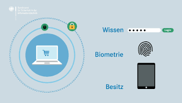
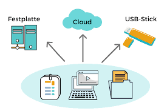

Hausaugabe
Sawsan-Difü Tarraf-Coding Atasi
Frahe 1
Was ist die Zwei-Faktor-Authentisierung, Nennen Sie bitte ein Beispiel?
Antwort
Ein Zwei-Faktor-Authentisierung ist wenn es nicht nur der psswort gibt soder
so was wiev das man ein einmalcode an seine email bekommt oder fingerabdruck

Frage 2
Wie richte ich für mein Google Account (Gmail) eine 2FA
(Zwei-Faktor-Authentisierung) mit SMS als zweiten Faktor ein?
Antwort
man geht in die eingschtellung dan auf schicherheit und dan auf an bei zweistufige überprüfung
Frage 3
Was sind Backups?
Antwort
Backups sind wen man eine kopie von sein fertigen project
und das am besten auf ein an deres gerät
Frage 4
Warum sollte ich Backups von meinen Dateien machen?
Antwort
man sollte backups mach das wen man was ausversehen was löscht
oder der projekt mit ein virus verlegt ist dan hat man ein anders

Frage 5
Wo und wie mache ich Backups?
Antwort
man geht in die einschtellung und dan auf updadet und sicherheit und dan
auf sicherung und dann auf laufwerk hinzufügen und dan deine explate auswählen